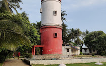
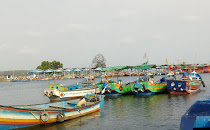
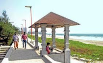

Top Sights - Kannur
Kannur Fort

Kannur lighthouse

Mapila Bay
Muzhapilangadu Beach

Payyambalam Beach

Kannur is dubbed as the City of Looms and Lores, thanks to the flourishing handloom industry and folk art called Theyyam. Theyyamis a ritualistic artform encompassing dance, music and mime, where the artist dons the guise of God. Kannur is believed to have got its name from being the land of Kannan or Krishna.